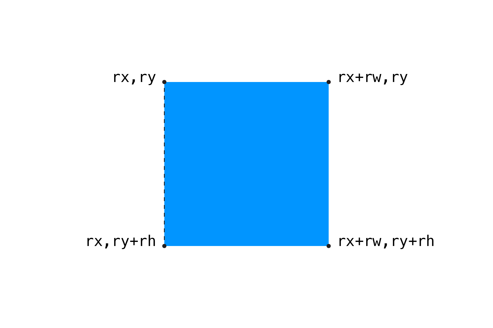

З круглими об’єктами працювати було легко, адже відстань від центра круга до його краю однакова в будь-якому напрямку. Із прямокутниками інша річ: вони мають чотири окремі сторони, тому нам знадобиться інший підхід. Зате, опанувавши його, ви дізнаєтеся, як працює чи не найпоширеніший елемент будь-якої програми чи гри — звичайна кнопка інтерфейсу, на яку наводять курсор миші!
У p5.js прямокутник типово задається чотирма числами: координатами x та y його лівого верхнього кута (rx, ry), а також його шириною (rw) та висотою (rh):
const rx = 10; // x-координата лівого верхнього кута
const ry = 10; // y-координата лівого верхнього кута
const rw = 30; // ширина прямокутника (width)
const rh = 30; // висота прямокутника (height)Коли точка з координатами (px, py) опиняється всередині такого прямокутника? Тоді, коли вона одночасно затиснута між усіма чотирма його сторонами:
1. Чи x-координата точки розташована ПРАВОРУЧ від ЛІВОГО краю прямокутника?
2. Чи x-координата точки розташована ЛІВОРУЧ від ПРАВОГО краю прямокутника?
3. Чи y-координата точки розташована НИЖЧЕ від ВЕРХНЬОГО краю прямокутника?
4. Чи y-координата точки розташована ВИЩЕ від НИЖНЬОГО краю прямокутника?Розберімо ці межі по черзі. Оскільки відлік прямокутника у функції rect(rx, ry, rw, rh) починається з лівого верхнього кута, положення його лівого краю — це просто змінна rx. Щоб точка була праворуч від лівого краю, її координата px має бути більшою або рівною rx:
if (px >= rx) {
// точка розташована праворуч від лівого краю прямокутника
}Ось ілюстрація, де пунктирною лінією позначено межу лівого краю:

А де розташований правий край прямокутника? Щоб дістатися до нього, потрібно до координати лівого краю rx додати ширину прямокутника rw. Точка буде ліворуч від правого краю, якщо її координата px не перевищує rx + rw:
const rightEdge = rx + rw;
if (px <= rightEdge) {
// точка розташована ліворуч від правого краю прямокутника
}Точнісінько за такою самою логікою перевіряємо вертикальні межі. Пам’ятаєте, що на полотні вісь y спрямована згори донизу? Тому верхній край має координату ry, а нижній край розташований на позначці ry + rh. Точка лежить між ними, якщо py >= ry (нижче від верхнього краю) і водночас py <= ry + rh (вище від нижнього краю).
Об’єднаймо всі чотири умови за допомогою оператора &&:
if (
px >= rx && // праворуч від лівого краю
px <= rx + rw && // І ліворуч від правого краю
py >= ry && // І нижче від верхнього краю
py <= ry + rh // І вище від нижнього краю
) {
return true;
}
return false;Якщо всі чотири умови виконуються одночасно — точка гарантовано перебуває всередині прямокутника! Зверніть увагу, як ми записали кожну перевірку з нового рядка: коли умов багато, таке форматування робить код охайним і захищає від помилок.
Повний код інтерактивного прикладу:
// координати точки, якою керує курсор
let px = 0;
let py = 0;
// координати та розміри прямокутника
let rx;
let ry;
const rw = 200;
const rh = 200;
function setup() {
createCanvas(window.innerWidth, window.innerHeight);
noCursor();
strokeWeight(15); // збільшена товщина точки для наочності
// розміщуємо прямокутник рівно по центру полотна
rx = (width - rw) / 2;
ry = (height - rh) / 2;
}
function draw() {
background(255);
// оновлюємо координати точки положенням курсора
px = mouseX;
py = mouseY;
// перевіряємо зіткнення точки з прямокутником
const isColliding = collidePointRect(px, py, rx, ry, rw, rh);
// змінюємо колір прямокутника під час наведення
if (isColliding) {
fill(255, 150, 0);
} else {
fill(0, 150, 255);
}
// малюємо прямокутник
noStroke();
rect(rx, ry, rw, rh);
// малюємо точку курсора
stroke(0, 150);
point(px, py);
}
// перевірка на зіткнення між точкою та прямокутником
function collidePointRect(px, py, rx, ry, rw, rh) {
// чи лежить точка в межах усіх чотирьох сторін прямокутника?
if (
px >= rx && // праворуч від лівого краю
px <= rx + rw && // І ліворуч від правого краю
py >= ry && // І нижче від верхнього краю
py <= ry + rh // І вище від нижнього краю
) {
return true;
}
return false;
}Далі: Прямокутник і Прямокутник